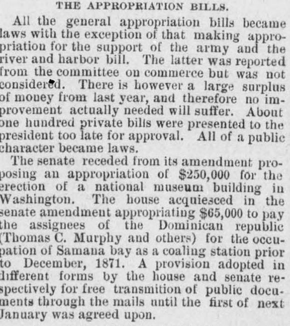
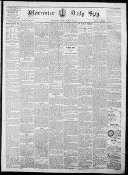

The senate receded from its amendment pro posing an appropriation of $250,000 for the erection of a national museum building in WashingtonEl senado retiró su enmienda que proponía una apropiación de $250,000 para la erección de un edificio de museo nacional en Washington
Worcester Daily Spy. Worcester [Mass.], March 5, 1877. Page 1. View the originalVer el original


See the full pageVer la página completaThe Worcester Daily Spy reported that the United States Congress passed legislation appropriating $65,000 to pay Thomas C. Murphy and other assignees of the Dominican Republic. The payment settled claims for the use and occupation of Samaná Bay as an American naval coaling station prior to December 1871.El Worcester Daily Spy informó que el Congreso de los Estados Unidos aprobó una partida presupuestaria de 65.000 dólares para indemnizar a Thomas C. Murphy y a otros cesionarios de la República Dominicana. El pago liquidó las reclamaciones devengadas por el uso y ocupación de la bahía de Samaná como estación carbonera naval estadounidense con anterioridad a diciembre de 1871.
FULL TEXT:TEXTO COMPLETO:
All the general appropriation bills became laws with the exception of that making appropriation for the support of the army and the river and harbor bill. The latter was reported from the committee on commerce but was not considered. There is however a large surplus of money from last year, and therefore no improvement actually needed will suffer. About one hundred private bills were presented to the president too late for approval. All of a public character became laws.Todos los proyectos generales de asignaciones se convirtieron en leyes con la excepción del que hacía asignación para el sostenimiento del ejército y el proyecto de ríos y puertos. Este último fue informado por el comité de comercio pero no fue considerado. Hay sin embargo un gran excedente de dinero del año pasado, y por tanto ninguna mejora realmente necesaria sufrirá. Unos cien proyectos privados fueron presentados al presidente demasiado tarde para su aprobación. Todos los de carácter público se convirtieron en leyes.
The senate receded from its amendment proposing an appropriation of $250,000 for the erection of a national museum building in Washington. The house acquiesced in the senate amendment appropriating $65,000 to pay the assignees of the Dominican republic (Thomas C. Murphy and others) for the occupation of Samana bay as a coaling station prior to December, 1871. A provision adopted in different forms by the house and senate respectively for free transmition of public documents through the mails until the first of next January was agreed upon.El senado retrocedió de su enmienda que proponía una asignación de $250,000 para la erección de un edificio de museo nacional en Washington. La cámara aceptó la enmienda del senado que asignaba $65,000 para pagar a los cesionarios de la república dominicana (Thomas C. Murphy y otros) por la ocupación de la bahía de Samaná como estación carbonífera antes de diciembre de 1871. Una disposición adoptada en formas diferentes por la cámara y el senado respectivamente para la transmisión gratuita de documentos públicos por los correos hasta el primero del próximo enero fue acordada.